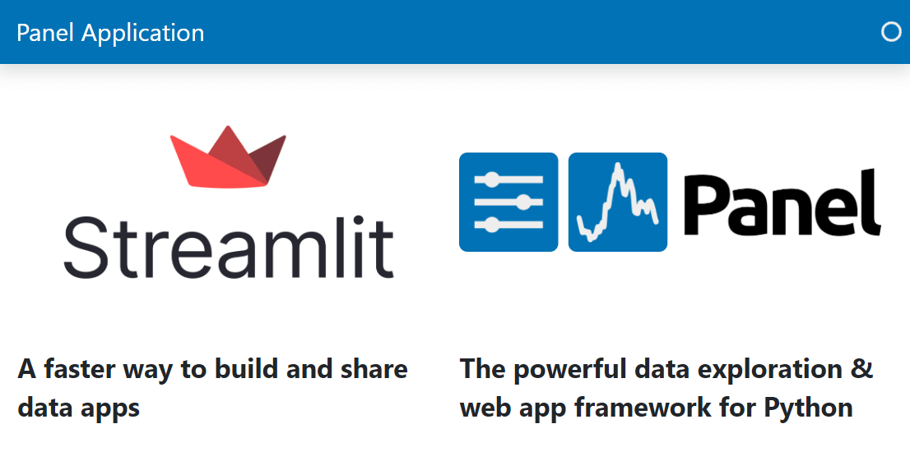

Migrate from Streamlit to Panel#
These guides addresses how to migrate from Streamlit to Panel.

These guides can also be used as:
An alternative Introduction to Panel if you are already familiar with Streamlit.
A means of comparing Streamlit and Panel on a more detailed level, without going into some of the unique functionality that Panel provides.
How to convert a Hello World application from Streamlit to Panel and serve it
How to display content with panes
How to organize components with layouts
How to accept user input with widgets
How to organize and style with templates
How to show activity with indicators
How to add interactivity with pn.bind.
How to improve the performance with caching
How to store state for a session
How to create create chat interfaces
How to create multi page apps
We hope you will have fun with the Panel framework. If you have usage questions you can post them on Discourse. If you experience issues or have requests for features please post them on Github.
If you want to support Panel please